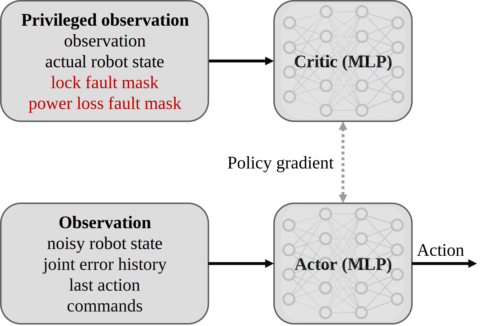

Project Outline
Our research focuses on fault-tolerant locomotion for quadruped robots. We showcase preliminary results obtained using an asymmetric actor-critic architecture trained with Proximal Policy Optimization (PPO) algorithms.
Architecture
Simulations
The following MuJoCo simulations show a quadruped robot tracking a commanded velocity—linear in \(x\) and \(y\) direction and angular around \(z\)-axis—while empowered by a nominal locomotion policy (left) and a fault-tolerant locomotion policy (right).
Experiments
Nominal locomotion policy deployed on a real quadruped robot ...
...also including the arms
Work in progress for sim-to-real transfer for fault-tolerant locomotion...